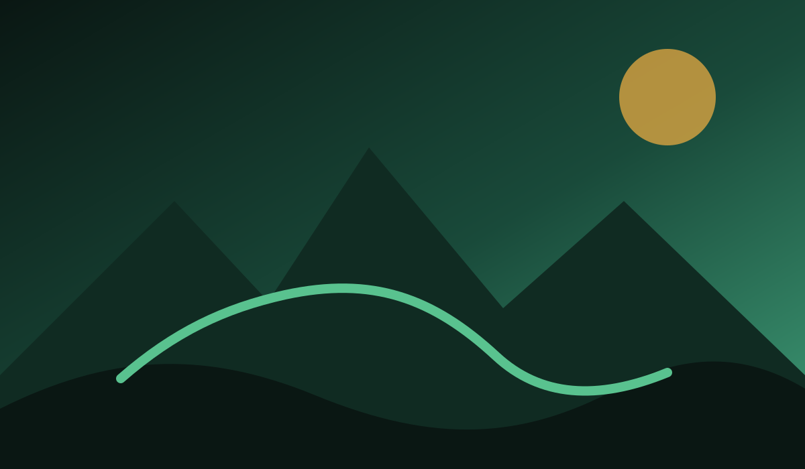
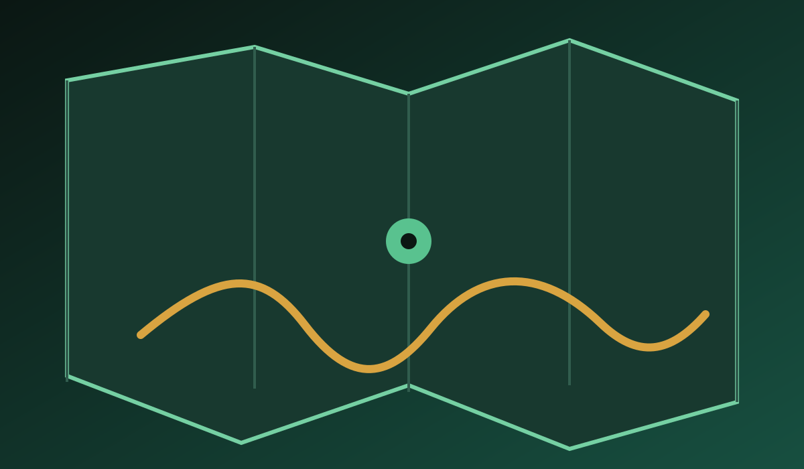
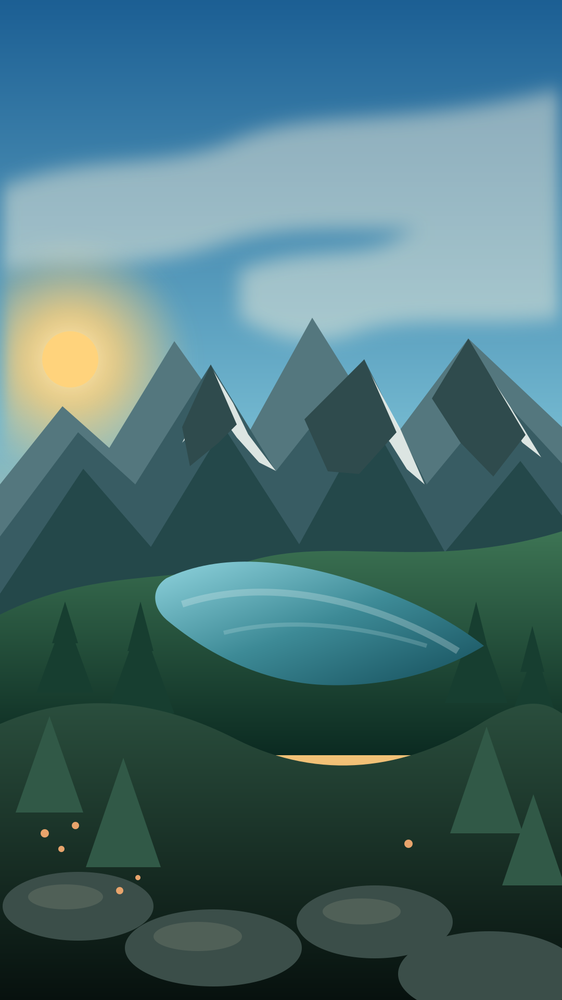
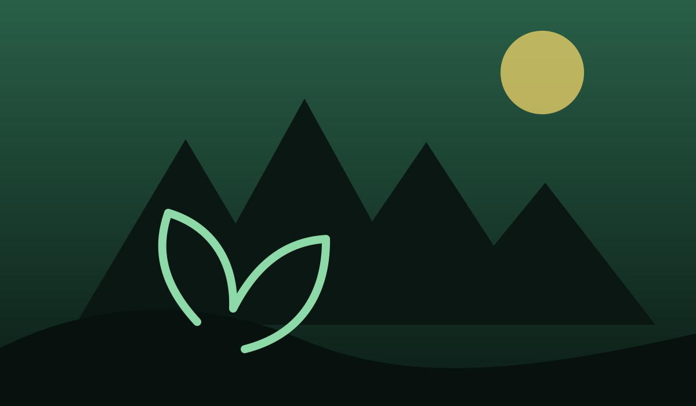
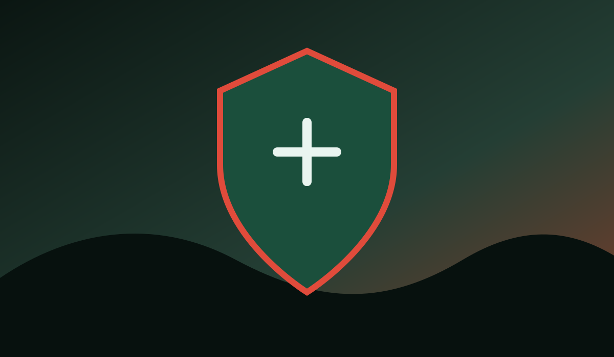

Rutas & navegación
De la planificación al sendero.
Una experiencia de ruta integrada con mapas, GPS y routing preparado.

La plataforma outdoor de España
Mapas offline, rutas detalladas, naturaleza, puntos de interés y seguridad, todo en una sola aplicación.
Vive España al aire libre.

◆ ◆ ◆ ◆
Una España por descubrir
España es un territorio único. Montañas, costas, ríos, bosques, desiertos y pueblos con historia te esperan. Con España Outdoor tienes toda la información para planificar tus rutas y vivir experiencias inolvidables.
Explorar rutas ›Biodiversidad
Fotografías reales, especies, hábitats y contexto territorial.
Cartografía
La plataforma está preparada para PMTiles, cartografía vectorial y experiencias offline regionales, con el mapa como superficie principal del producto.
Rutas
Planifica, importa GPX, registra recorridos y consulta información territorial desde una experiencia orientada al terreno.

Una experiencia de ruta integrada con mapas, GPS y routing preparado.
Importación y exportación.
Posición y trazado.
Naturaleza
Información de naturaleza, fauna, flora y conservación integrada en el contexto del territorio.





Seguridad
SOS, contactos de confianza, Rescue Link y alertas se plantean como módulos claros y auditables, integrados en el flujo de salida.
Conocer las funciones de seguridad ›La aplicación
La experiencia operativa está pensada para móvil, con Android como prioridad actual y una arquitectura preparada para crecer.

España Outdoor
La web seguirá creciendo junto al producto: cartografía, contenidos territoriales, servicios y descargas oficiales cuando estén publicados.
Contacto del proyecto →